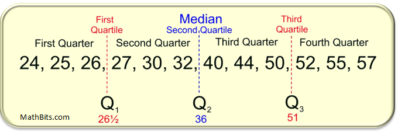

summary(iris$Sepal.Length) Min. 1st Qu. Median Mean 3rd Qu. Max.
4.300 5.100 5.800 5.843 6.400 7.900 We have already done some Exploratory Data Analysis (EDA) in order to become familiar with the data. We asked ourselves what the logical and physical structure were, as well as if there were any “issues” with the data concerning missing values. We also started to prepare the data for future analysis by converting some columns to factors and occasionally creating new factor columns using the cut() function on a column composed of quantitative data. We finished off our Goal 1 of EDA by looking at a summary of the dataset and visualizing it in order to get a better idea of what the data we were working with looks like.
Now that we are familiar with the dataset and know what it looks like, we can move on to describing the data. To describe the data, we can use descriptive statistics. The three of the big ways we will use to describe a dataset are the center, the spread, and the shape of the dataset. All of these will help us understand the data at a deeper level.
Describing the center of a dataset can help give us insight into what the data looks like, but we do lose some meaning when we reduce all of the data values down to a single representative value. Because we lose some meaning, multiple “competing” definitions of the center have emerged. These different definitions will allow us to identify patterns in the data that a single one by itself will not be able to tell us. We already know that there are multiple different ways in which we can describe the center of a dataset. We can do this with the mean, which is the average, the median, which is the middle of a sorted list, and the mode, which is where the highest occurring frequency happens.
The central tendency can give us insight into the shape of the distribution. In order for a distribution to be symmetric, that is the “left-hand” side and the “right-hand” side look like mirror images, the mean must equal the median. This is a necessary condition, but not necessarily a sufficient condition. If the mean and median are equal then do we have a symmetric distribution? We will investigate this condition later after we look into the shape and spread of the distribution a little bit more.

Let’s look at a quick example in order to see how the center can tell us about the shape. The first thing that we will probably want to look at is to see if the mean and median are close to each other. Then, another thing we can do is look at the Quartiles of the dataset. We will want to see if the range of the \(2^{\text{nd}}\) Quartile (2Q) and the \(3^{\text{rd}}\) Quartile (3Q) are comparable as well as if the range of the \(1^{\text{st}}\) Quartile (1Q) and \(4^{\text{th}}\) Quartile (4Q) are comparable. If the range of the \(1^{\text{st}}\) Quartile is much larger than the range of the \(4^{\text{th}}\) Quartile then it may indicate that the distribution is negatively skewed. Now, remember that the \(1^{\text{st}}\) Quartile is the first 25% of the data, the \(2^{\text{nd}}\) Quartile is the second 25% of the data, and so on.
summary(iris$Sepal.Length) Min. 1st Qu. Median Mean 3rd Qu. Max.
4.300 5.100 5.800 5.843 6.400 7.900 In the output above, we can see that the mean and median are comparable to each other, which indicates we might have a symmetric distribution. Looking at the range of the \(2^{\text{nd}}\) and \(3^{\text{rd}}\) Quartiles we can see the range of the \(3^{\text{rd}}\) Quartile (\(6.4-5.8=0.6\)) is slightly smaller than the range of the \(2^{\text{nd}}\) Quartile (\(5.8-5.1=0.7\)). Additionally, looking at the range of the \(1^{\text{st}}\) Quartile (\(0.8\)) and \(4^{\text{th}}\) Quartile (\(1.5\)) we can see that we have a wider Q4 then we have with Q1. This might indicate a positive skew since the larger range of Q4 might suggest we have outliers above the mean.
Looking at another example, our first impression may be that the data is slightly negatively skewed due to outliers below the mean. This is because while the mean and median are similar, the range of Q1 is larger than the range of Q4.
summary(cars$speed) Min. 1st Qu. Median Mean 3rd Qu. Max.
4.0 12.0 15.0 15.4 19.0 25.0 We should note that this method is only to give us an initial impression of the skew of the data and is not meant to be a definitive statement. We will see additional techniques later that we can employ to get a more definitive answer.
Another technique we can use to measure the central tendency is to use the trimmed mean. It is important to remember that the mean is affected by outliers, meaning extreme values on either side may cause the mean to be “pulled” one way or another. The idea behind the trimmed is to remove a percentage of the top and bottom values and then calculate the mean. This allows us to determine the average of the majority of the values, so the extreme outlier will not have any influence. This method of finding the mean is used in many Olympic competitions, most notably in Figure Skating. The highest and lowest scores are discarded so a single judge could not “tank” the score of an opposing country’s competitor.
After carrying out a trimmed mean, the shift in the mean will highlight the effect and impact of extreme values. If there is an increase with the trimmed mean then it indicates we have extreme values on the left-side. If there is a decrease with the trimmed mean then we have outliers on the right-side. And if there is only a slight change then there is only a minimal impact from extreme values.
This can be done in R using the ‘trim’ argument within the mean function. Below are a few examples of trimming 10% in total (which does 5% from both sides). The first example indicates that there are a few extreme outliers above the mean which “pull” the mean up:
mean(mtcars$disp)[1] 230.7219mean(mtcars$disp, trim=.1)[1] 222.5231In this next example we can see that the mean and the trimmed mean are close to each other. This indicates that there is minimal impact from outliers. It does not indicate that there are no outliers though, as the outliers could be “counter-acting” each other.
mean(iris$Sepal.Length)[1] 5.843333mean(iris$Sepal.Length, trim=.1)[1] 5.808333Finally, in this last example we can see the effect of an outlier on the “left-hand” side. The combine function is used to calculate the mean of the Sepal.Length vector and the value -100. Doing the trimmed mean removes this outlier and calculates the mean again, which indicates this outlier on the “left-hand” side was affecting the mean.
mean(c(iris$Sepal.Length,-100))[1] 5.142384mean(c(iris$Sepal.Length,-100), trim=.1)[1] 5.8Another important way to calculate the mean is using a weighted average. The idea behind this calculation is to assign a weight to each value and then calculate the mean. This is commonly done with quantitative discrete data. You have used the weighted mean before to calculate your grade grades and your GPA. The weighted mean can be described with the following formula: \[ \frac{\sum_{i=1}^n w_i\cdot x_i}{\sum_{i=1}^n w_i} \] where \(x_i\) is the value and \(w_i\) is the weight associated with it.
When every value has the same weight then we are calculating the mean. Below is an example of this:
x <- c(1, 4, 7, 4, 5, 9)
w <- c(1/2, 1/2, 1/2, 1/2, 1/2, 1/2)
sum(x*w)/sum(w)[1] 5mean(x)[1] 5If the weights are different then it may not result in the mean of the values. Below is an example of the weighted mean when it comes to calculating final grades in the class:
x <- c(90, 100, 70, 50, 95)
w <- c(.05, .10, .25, .25, .35)
mean(x)[1] 81sum(x*w)/sum(w)[1] 77.75Finally, we will look at a financial based question. Assuming that we own a store which sells only 3 products: A for $6.50, B for $7.00, and C for $12. We might want to ask ourselves what the average sale price is? Well, if we just took the mean of the three products we would get $8.50. But this does not take into account the fact that we might sell more of one product than another. If we sold 200 units of Product A, 100 units of Product B, and only 5 units of Product C, then the average sale price would be vastly different.
price <- c(6.50, 7.00, 12.00)
mean(price)[1] 8.5sold <- c(200,100,5)
sum(price*sold)/sum(sold)[1] 6.754098The mode is another descriptive statistic which might be useful in summarizing the data. This tells us which value occurs most frequently in a dataset. Unfortunately, there is no function in base R which calculates this for us, as the ‘\(mode()\)’ function deals with the storage of an object and does not calculate the value occurring most frequently. We could create our own function in R in order to calculate it though:
MODE <- function(x){
tbl <- table(x)
as.numeric(names(tbl[tbl==max(tbl)]))
}Note: We will introduce a few functions in R over the next few sections. You should be focused on when to use them and how to interpret the output, not the actual code.
What the function above is doing is allowing us to pass a vector into the function and it is then creating a table of all of the different values. It then identifies which value in the table is the largest and searches the table for any values that are equal to this value (since there can be multiple modes). It then selects all of them that are the maximum value and prints out the names of the selected values. Below is an example to see the function at work:
table(mtcars$cyl)
4 6 8
11 7 14 MODE(mtcars$cyl)[1] 8Our function will also be able to determine the mode if there are multiple occurrences of the largest value:
data_example <- c(10, 10, 10, 12, 13, 13, 14, 15, 15, 15, 16, 16, 17)
table(data_example)data_example
10 12 13 14 15 16 17
3 1 2 1 3 2 1 MODE(data_example)[1] 10 15The function that we created only works for quantitative discrete data though. Continuous data has too few repeats due to the values being able to be anything within a given interval. This would result in our function identifying every value as the mode, which is not very helpful. We could use our density function to estimate the mode though. This would tell us which value on our density function is the highest. Below is the code for that (again, it is not vital for us to understand how to write functions in R right now):
estimate_mode <- function(x) {
from=min(x, na.rm=TRUE)
to=max(x, na.rm=TRUE)
d <- density(x, from=from, to=to, na.rm=TRUE)
d$x[which.max(d$y)]
}If we were to randomly generate 1,000 observations from the normal distribution and plot it we could see the density plot is largest around 53. The estimated mode tells us the density line is the tallest around 52.8, which confirms our visualization. The black vertical line was inputted to help show where 52.8 was in the graph. We should be careful in using our function, as it only works for continuous data with a single peak. If we have bi-modal data (with 2 peaks) then we would have to create a new function.
x <- rnorm(1000,50,8)
estimate_mode(x)[1] 52.11711hist(x, col="lightblue", freq=FALSE)
lines(density(x), col="red")
abline(v=52.81717, col="black", lwd=2)
We have already talked some about the median and quartiles. We could calculate the \(p^{\text{th}}\) quantile which is the value where \(100\cdot p%\) of the data is less than the value. This also means that \(100\cdot (1-p)%\) of the data is more than this value. If we are in the \(90^\text{th}\) percentile for intelligence then we are really smart since we score better than 90% of people. But, if we are in the \(17^\text{th}\) percentile for salary then we know we are only making more money than 17% of people (and we should probably ask for a raise).
In order to calculate different quantiles in R, we could use the ‘\(quantile()\)’ function. We need to pass a vector into it and tell it where we want to set the breaks (as decimals). We can do this using the sequence function. Below is an example of how we could do it with quartiles and quintiles:
seq(from=0,to=1,by=0.25)[1] 0.00 0.25 0.50 0.75 1.00quantile(mtcars$mpg, seq(from=0,to=1,by=0.25)) 0% 25% 50% 75% 100%
10.400 15.425 19.200 22.800 33.900 seq(from=0,to=1,by=0.2)[1] 0.0 0.2 0.4 0.6 0.8 1.0Similar to the mode function we created earlier, we could create functions in R to put all of the information in a single place for us. Be careful though, as passing continuous data into it may result in everything being outputted as a mode (you can always remove the MODE function if you are dealing with continuous data):
center_stats <- function(x){
c(mean=round(mean(x,na.rm=TRUE),2),
median=round(median(x,na.rm=TRUE),2),
trim25=round(mean(x,trim=.25,na.rm=TRUE),2),
trim10=round(mean(x,trim=.10,na.rm=TRUE),2),
mode=round(MODE(x),2),
est_mode=round(estimate_mode(x),2)
)
}
center_stats(iris$Sepal.Length) mean median trim25 trim10 mode est_mode
5.84 5.80 5.80 5.81 5.00 5.72 center_stats(airquality$Ozone) mean median trim25 trim10 mode est_mode
42.13 31.50 33.40 37.80 23.00 20.61 We could do something similar with our position summary as well and view the quartiles and quantiles:
position_stats <- function(x) {
list(quint=quantile(x,seq(0,1,.2), na.rm=TRUE),
quart=quantile(x,seq(0,1,.25), na.rm=TRUE))
}
position_stats(iris$Sepal.Length)$quint
0% 20% 40% 60% 80% 100%
4.30 5.00 5.60 6.10 6.52 7.90
$quart
0% 25% 50% 75% 100%
4.3 5.1 5.8 6.4 7.9 These center stats and position stats might indicate to use the the Sepal Length of an iris is symmetric since the mean and median are roughly the same, with no real differences in the mean and trimmed mean. Additionally, the position stats do not show too much reason to be concerned as the distance between the 25th and 50th percentile is roughly the same as the distance between the 50th and 75th percentile. We can make the same argument for the bottom half of the data and the top half of the data and get similar results. We will see in future sections how we can quantify the symmetry of the dataset using a formula/number.
The last example we will look at in this section are the calculations for the Ozone variable in the “airquality” dataset. The center stats were carried out above and it indicates that this variable is not symmetric since the mean and median are far apart along with the mean and trimmed mean being different. Interpreting the position stats for the variable give us similar results. We can see that the top half of the dataset is much more spread out then the bottom half of the dataset, indicating that we probably have a skewed distribution.
position_stats(airquality$Ozone)$quint
0% 20% 40% 60% 80% 100%
1 14 23 39 73 168
$quart
0% 25% 50% 75% 100%
1.00 18.00 31.50 63.25 168.00 It is important to note that these outputs will not definitively prove if the distribution is symmetric or not. We will need to utilize all of the information we learn over the next few lectures along with a visualization to make any determination. Because we will be utilizing these functions that we have created throughout the rest of the course, I encourage you to save them somewhere so that you can run them when needed (like when you start a new session in R or if you need to use the functions in an RMarkdown document).
There are a few descriptive statistics that we should look at in order to gain more information about our data. The three big ones are the center of the data, the spread of the data, and the skewness of the data. We have already seen how central tendency can tell us about a dataset in terms of the symmetry of the data. In this lecture, we will look into what the spread of the data can tell and relate some of this information back to the idea of symmetry.
Let’s assume that we are given two different sets of data regarding salaries at two different companies. If I told you that employees at both companies earned an average of $75,000 then might consider both sets of data to be about the same. This is not quite true though, as every employee at Company A could make exactly $75,000 while most employees at Company B make $50,000 with a single outlier (probably the CEO) making a ton of money, thus bringing the mean to $75,000. This example should show us that the central tendency of a dataset by itself does not tell us the whole picture, we also need to provide the spread of the data. There are a few different ways that we can describe the spread of our data; the two simplest methods would be using our Range Difference and our Standard Deviation (two methods we have already discussed).
One way to describe the range of a dataset is to calculate the variance of the data. This will tell us how far (on average) data varies from the mean. This should sound extremely similar to our standard deviation, which is expected since the two are related. In fact, the variance (\(\sigma^2\)) is the standard deviation (\(\sigma\)) squared. Its exact formula can be seen below: \[ \text{variance } = \sigma^2 = \frac{\sum_{i=1}^n (x_1-\bar{x})^2}{n-1}\]
It should be noted that the units are squared for variance. This means that if our data is measuring pounds then the variance will be in pounds\(^2\). Taking the square root of the variance will give us the standard deviation. The idea of variance and standard deviation allows us to compare two sets of data that have the same units. Below, we can see the calculation in R using a formula and the built-in function and how it relates to standard deviation:
x <- c(4, 7, 3, 1, 7, 9, 5, 3, 2, 6, 8)
sum((x-mean(x))^2)/(length(x)-1) # Variance[1] 6.8var(x)[1] 6.8sqrt(6.8) # Standard Deviation[1] 2.607681sd(x)[1] 2.607681If we go back to our previous example about salary, we can compare the two groups using both the mean and the standard deviation. If we found the standard deviation of Company A to be $5,000 and Company B to be $30,000 then we could say that the salaries at Company B are much more spread out than at Company A. The mean and the standard deviation should always be interpreted together, as just knowing one does not tell us the full picture of the data.
Another way that we can describe the spread of the data is through quartiles. We touched on quartiles in the previous section and mentioned that they break up the data into ``quarters”. In order to calculate the different quartile values (First Quartile=Q1, Second Quartile=Median=Q2, and Third Quartile=Q3) we will first need to order our data from smallest to largest and then identify the middle value. This middle value of the dataset will be the median, also known as Q2. This tells us the value such that 50% of the data is below it and 50% of the data is above it.
Once we have found the median, we can break our data up into a “lower” half and an ``upper” half. We then find the median of each of those groups and that tells us what our Q1 and Q3 are. The First Quartile (Q1) will tell us the value such that 25% of the data is below it (and thus 75% of the data is above it). Likewise, the Third Quartile (Q3) will tell us the value such that 75% of the data is below is (and thus 25% of the data is above it). An example of this can be seen in the dataset below:

It should probably be mentioned that R sometimes calculates quartiles a little bit differently than you may expect. That is because there are actually nine(!) different ways programmed in R. We can choose different methods using the ‘type=’ argument in our ‘quantile()’ function. Below is an example of carrying out the process in R and seeing that we get different results than the picture above depending on the type we select to caclulate the quartiles. Don’t worry about the small differences or the details as all of the results will give us similar values, and it will not affect any calculations we do. I just wanted to point this out in case we try finding it by hand or use an online calculator and then compare it to R and notice that it is different.
x <- c(24, 25, 26, 27, 30, 32, 40, 44, 50, 52, 55, 57)
summary(x) Min. 1st Qu. Median Mean 3rd Qu. Max.
24.00 26.75 36.00 38.50 50.50 57.00 quantile(x, c(0,.25,.50,.75,1)) 0% 25% 50% 75% 100%
24.00 26.75 36.00 50.50 57.00 quantile(x, c(0,.25,.50,.75,1), type=5) 0% 25% 50% 75% 100%
24.0 26.5 36.0 51.0 57.0 quantile(x, c(0,.25,.50,.75,1), type=6) 0% 25% 50% 75% 100%
24.00 26.25 36.00 51.50 57.00 We can use these quartiles to determine the spread of our data along with if the data is possibly symmetric. Remember that when we do this “Quartile Analysis”, we want to check that the Median-Minimum is roughly the same size as the Maximum-Median. Additionally, we want to check whether Q1-Minimum is roughly similar to Maximum-Q3 and if Median-Q1 is roughly similar to Q3-Median. Going through this process, we may see that data on one side of the median is more spread out, which may indicate the data is skewed toward that side.
We can go a little bit further and introduce the idea of the Inter-Quartile Range (IQR). This will be calculated as the middle 50% of the data (or Q3-Q1). This is important as it tells us how spread out the middle part of our data is. Typically, it is said that data below \(Q1-1.5\cdot IQR\) or above \(Q3+1.5\cdot IQR\) are considered outliers.
We can calculate the Inter-Quartile Range, as well as our other quartile ranges used in our “Quartile Analysis” using the quantile function in R. We can see that the two halves are not the same “size”, indicating potential positive skew due to the “right side” being bigger then the “left side”.
median(mtcars$mpg) - min(mtcars$mpg)[1] 8.8max(mtcars$mpg) - median(mtcars$mpg)[1] 14.7Looking at the different Quartile Ranges we can see that the middle sections are fairly symmetric, which indicates that the tails may be the thing causing the skew to occur.
median(mtcars$mpg) - quantile(mtcars$mpg, .25) 25%
3.775 quantile(mtcars$mpg, .75) - median(mtcars$mpg)75%
3.6 # We have a symmetric middle since values are about the sameWe can also calculate our IQR in R and we can see that 50% of our data only falls over a range of roughly 7.4 mpg.
quantile(mtcars$mpg, .75) - quantile(mtcars$mpg, .25) # This is our IQR 75%
7.375 Finally, looking at our quartile ranges for the tails we can see that the skewness is on the right side due to the upper 25% of the data taking up more room than the lower 25% of the data.
quantile(mtcars$mpg, .25) - min(mtcars$mpg) 25%
5.025 max(mtcars$mpg)-quantile(mtcars$mpg,.75) 75%
11.1 # May indicate a positive skew since right-half is bigger than left-halfIf we wish to compare two sets of data, then we can Normalize the data. What we are doing here is centering our data around the mean and then dividing it by the standard deviation in order for us to have a unitless value. Doing this will allow us to compare sets with either the same or different units. It also allows us to not have to define what a “big” difference or a “big” range is like we did before to identify the skew. It makes all of the data normalized and thus easier to read and compare with differing groups. We have seen this idea before with the idea of the \(z\)-score, which tells us how many standard deviations above (or below) the mean a value is:
\[ z\text{-score} = \frac{\text{value} - \text{mean}}{\text{standard deviation}}\]
This idea of normalization often allows us to apply the z-score technique to Normal Distributions. This will give us the Standard Normal Distribution with a mean of 0 and a standard deviation of 1, denoted as N(0,1). If we were to plot a standard normal distribution, it would look like the figure below, with a z-score of 1 indicating a value of 1 standard deviation above the mean and a z-score of -2 indicating a value of 2 standard deviations below the mean.
Note that the idea of normalized data can be carried out on any set of data as well as descriptive statistics, allowing us to indicate the skew of the data. Below is an example of standardizing the data in R making it easier to see the right-skew:
summary( (mtcars$mpg-mean(mtcars$mpg))/sd(mtcars$mpg) ) Min. 1st Qu. Median Mean 3rd Qu. Max.
-1.6079 -0.7741 -0.1478 0.0000 0.4495 2.2913 We could also compare the percentages within 1, 2, and 3 standard deviations if we were to write a function. It will allow us to learn about where the data lies as well as the thickness of the tails, which we will discuss in the next section. Once again, we do not need to understand how to write a function in R, we just need to know the general idea of what it is doing.
pct <- function(x,n) {
lbnd <- mean(x,na.rm=TRUE) - n*sd(x,na.rm=TRUE)
ubnd <- mean(x,na.rm=TRUE) + n*sd(x,na.rm=TRUE)
(pct <- round(length(x[x>=lbnd & x<=ubnd])/length(x)*100,2))
}We can use this function to see what percent of the data is within 1, 2, and 3 standard deviations. We know that a normal distribution will roughly follow the 68-95-99.7 rule in terms of the spread of the data. If I were to do this in R I could get the following results:
pct(mtcars$mpg, 1) # Expecting 68[1] 75pct(mtcars$mpg, 2) # Expecting 95[1] 93.75pct(mtcars$mpg, 3) # Expecting 99.7[1] 100The results above indicate that we have more data within 1 and 3 standard deviations than we would expect. This may indicate skewness in our data along with a different tail thickness than a normal distribution (but that will come next time)
We could build a function to help us summarize the spread of our data. This function will calculate the standard deviation, IQR, the normalized minimum, maximum, and range as well as the percentage of data within 1, 2, and 3 standard deviations:
spread_stats <- function(x){
c(sd=round(sd(x,na.rm=TRUE),2),
iqr=round(IQR(x,na.rm=TRUE),2),
minz=round(range(scale(x),na.rm=TRUE)[1],2),
maxz=round(range(scale(x),na.rm=TRUE)[2],2),
diffz=round(diff(range(scale(x),na.rm=TRUE)),2),
prp1=round(pct(x,1),2),
prp2=round(pct(x,2),2),
prp3=round(pct(x,3),2))
}
spread_stats(mtcars$mpg) sd iqr minz maxz diffz prp1 prp2 prp3
6.03 7.38 -1.61 2.29 3.90 75.00 93.75 100.00 So far we have discussed what the center and the spread of the data can tell us about symmetry. Remember that for data to be symmetric the mean has to equal the median. In this lecture, we will look into how we can measure the shape of the distribution using symmetry, skewness, and the tails of the data.
We have seen that extreme values have the potential to impact the mean. This can cause the data to be skewed to either the right side or to the left side. Extreme values above the mean make the tail longer on the right while extreme values below the mean make the tail longer on the left. We can quantify skew using the following formula:
\[ \text{skew}=\frac{\frac{1}{n}\sum_{i=1}^n (x_i - \bar{x})^3}{s^3} = \frac{1}{n} \sum_{i=1}^n z_i^3 \]
If the value of the skew is positive then the data will be right-skewed and if the skew is negative then it will be left-skewed. A skew of 0 will indicate that we may have a symmetric distribution. Values between -0.5 and 0.5 can probably be considered fairly symmetric. If the skew lies between -0.5 and -1 or 0.5 and 1 then we can consider it moderately skewed, and values more extreme will be considered highly skewed. We have a formula in R that we can implement to calculate the skew for us:
skew <- function(x) {
z <- (x-mean(x,na.rm=TRUE))/sd(x,na.rm=TRUE)
mean(z^3,na.rm=TRUE)
}We can test this function out on data we have shown to be both skewed and symmetric:
skew(rgamma(500,2,scale=5)) # Have shown this to be skewed[1] 1.622436skew(rnorm(500,0,2)) # Have shown this to be symmetric[1] -0.1618855skew(mtcars$mpg) # Have shown this to be moderately skewed[1] 0.610655These values should validate the calculations we did earlier relating to center and spread. We still want to go through the process of our “Quartile Analysis” and other steps to verify that we are skewed, as we do not want to just rely on the visualization (though it can help confirm) to determine symmetry/skew.
If we do happen to have extreme values or highly skewed data then we will probably not want to use the mean and standard deviation. This is because these statistics are highly influenced by outliers. Instead, we will want to consider using the Median and IQR to give better measures of the center and spread of the data.
Another important thing to look at when it comes to the shape of the distribution is the kurtosis. This tells us information about the tails of our data, specifically if they are thinner or thicker than the tails of a normal distribution. If there are extreme values then data is “pulled” into the tails, resulting in the “thicker tails”. If our data has thicker tails then we will call it “leptokurtic”. If there is less data in the tails (meaning the tails are “thinner”) then there is a minimal impact of extreme values. This will be called “platykurtic”. We can visualize what both of these look like (with mesokurtic being normally distributed)
This idea of looking at the tails is important in allowing us to compare the data with a normal distribution. We know through the 68-95-99.7 rule that if we have a normal distribution then roughly 68% of the data is within 1 standard deviation, 95% of the data is within 2 standard deviations, and 99.7% of the data is within 3 standard deviations. So, if we calculate the proportion of data within 1 standard deviation from the mean and get a value less than 68% then we have the potential for thicker tails (and thus more extreme values), while a value greater than 68% indicates that we have thinner tails (and thus fewer extreme values).
We can also quantify the kurtosis with the formula below. If the kurtosis is positive then we have more values in the tails (leptokurtic) and if the kurtosis is negative then we have fewer values in the tails than a normal distribution (platykurtic).
\[ \text{kurtosis} = \frac{1}{n} \sum_{i=1}^n z_i^4 - 3 \]
We can create a function in R that will calculate the kurtosis for us:
kurt <- function(x) {
z <- (x-mean(x,na.rm=TRUE))/sd(x,na.rm=TRUE)
mean(z^4,na.rm=TRUE) - 3
}We can then use this function to calculate the kurtosis for the ‘mpg’ vector in the ‘mtcars’ dataset. In the previous lecture, we saw that 100% of the data was within 3 standard deviations, implying that it has thinner tails than a normal distribution. Therefore we would expect the kurtosis to be negative.
kurt(mtcars$mpg)[1] -0.372766We could also write a function to combine the skew and kurtosis calculations into a single function to use. For instance, we can see in the dataset ‘mlb_teams’ that the Wins column is moderately skewed left and that it has thicker tails than the normal distribution.
shape_stats <- function(x) {
c(skew=round(skew(x),2),
kurt=round(kurt(x),2))
}library(openintro)shape_stats(mlb_teams$wins) skew kurt
-0.75 0.82 shape_stats(mtcars$mpg) skew kurt
0.61 -0.37 The Mode of a distribution is directly related to the shape. If we have symmetric data and it is uni-modal (one mode) then all of the values are clustered around a single point. If data is bi-modal (two modes) then the data is clustered around two points. We could extend this idea of clustering to occur around multiple points. Typically, if there are multiple modes then there are probably multiple populations included in the dataset. This may be able to be ``broken” apart using categorical variables. An example of this would be the average height of students may be bi-modal due to males and females having different average heights.
Now that we can look at the center, the spread, and the skew of the data we can start talking about how to assess the data. We might ask ourselves what relationships and patterns can be seen and what transformations might help us gain a deeper understanding of the data.
Looking at the ‘babies’ dataframe with a specific focus on the ‘bwt’ column, we can run through our exercises to learn about the center, spread, and skew. We should be able to determine that this is unimodal data which has a slight negative skew and slightly thicker tails than a normal distribution. There is also a minimal impact from extreme values. We can visualize this data and compare it to a normal distribution (the red line) to see how it would compare:
hist(babies$bwt,freq=FALSE)
lines(density(babies$bwt),col="blue")
xfit <- seq(0,max(babies$bwt),.1)
yfit <- dnorm(xfit,mean=mean(babies$bwt), sd=sd(babies$bwt,na.rm=TRUE))
lines(xfit, yfit, col="red", lwd=2)